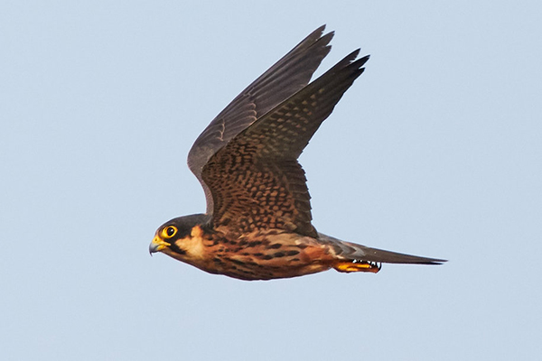

Es un halcón pequeño y esbelto, de alas acabadas en punta y tan largas que, plegadas, sobrepasan la cola. Esta elegante ave de presa mide de 30 a 35 cm, más o menos del tamaño de un cernícalo.

Como todos los halcones, tiene una serie de plumas de color negro debajo de cada ojo que contrastan con el blanco de las mejillas.
El vientre es de color amarillento con rayas negras verticales en los individuos jóvenes y horizontales en los adultos. La parte superior de las alas es gris.
Durante la primavera y otoño se establecen grupos de alcotanes en lugares de costa idóneos en los que son abundantes los pasos de pequeños pájaros en migración y allí cazan gran cantidad de fringílidos como pinzones, verderones, jilgueros, etcétera.
En vuelo puede parecer un vencejo por sus largas alas. Machos y hembras son muy similares, pero los jóvenes son más marrones que los adultos.
Otra característica de la especie en cuestión es que las plumas de detrás de las patas son rojas.
Entradas sugeridas: Cernícalo Halcón Esmerejón